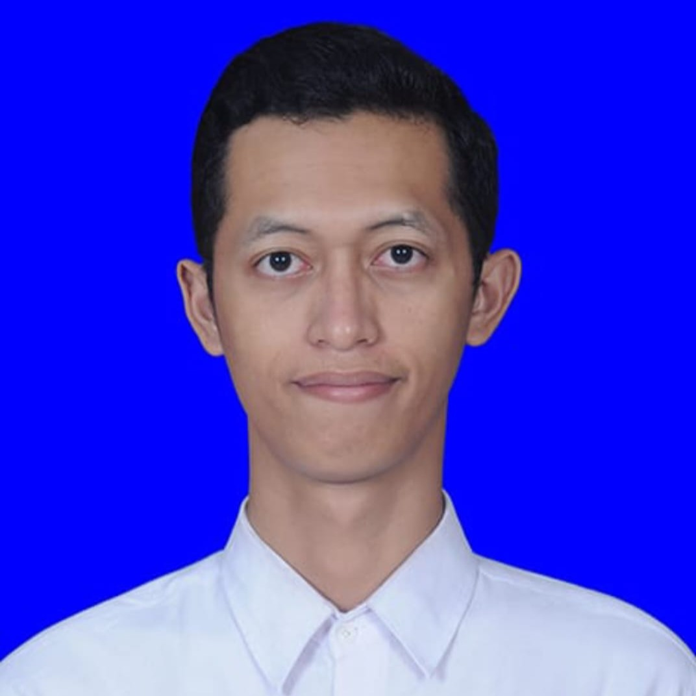

Microsoft Excel
Microsoft Excel, Word, dan PowerPoint; data entry dan pengolahan data pembelian.

Foto profil
Profesional dengan pengalaman di bidang purchasing, administrasi pembelian, pembaruan data harga, monitoring stok dan outstanding Purchase Order, pelaporan, serta verifikasi invoice. Terampil menggunakan Microsoft Office dan memiliki pengalaman menggunakan sistem ERP seperti Microsoft GP Dynamic, Accurate, dan SAP. Lulusan S1 Teknik Elektro Universitas Negeri Surabaya.
Saya memiliki pengalaman sebagai Staff Purchasing di perusahaan distribusi/perdagangan serta perusahaan produk ibu dan anak. Pekerjaan saya mencakup administrasi pembelian, pengelolaan dokumen purchasing, pembaruan dan monitoring data harga supplier, pengolahan data stok, pemantauan outstanding Purchase Order, pembuatan laporan harga pembelian, dan verifikasi invoice. Pengalaman di bidang sales juga membentuk kemampuan komunikasi, analisis kebutuhan pelanggan, negosiasi, serta koordinasi lintas tim.
Wgmukti.
Microsoft Excel, Word, dan PowerPoint; data entry dan pengolahan data pembelian.
Administrasi pembelian, pengarsipan quotation/price list/invoice, pembaruan harga, dan verifikasi invoice.
Sistem ERP: Microsoft GP Dynamic, Accurate, dan SAP; pengolahan data dan ketelitian pencatatan.
• Input dan memperbarui data harga pembelian serta memeriksa kesesuaiannya dengan penawaran supplier.
• Memantau data stok harian dan outstanding Purchase Order di vendor.
• Menyusun laporan harga pembelian dan rekap data, melakukan pencatatan/verifikasi invoice, serta mengarsipkan quotation, price list, dan invoice.
• Berkoordinasi dengan tim purchasing dan supplier untuk menjaga akurasi data pembelian.
• Mengelola administrasi pembelian, membuat dan mengarsipkan dokumen purchasing.
• Berkoordinasi dengan supplier dan memastikan proses pengadaan berjalan tepat waktu sesuai prosedur.
• Menawarkan produk pembiayaan, menganalisis kebutuhan pelanggan, melakukan prospek dan akuisisi nasabah.
• Menjaga hubungan dengan nasabah, melengkapi dokumen aplikasi kredit, melakukan survei awal, dan berkoordinasi dengan tim internal untuk proses persetujuan.
• Memasarkan produk gas industri dan layanan perusahaan kepada pelanggan di berbagai sektor.
• Mengembangkan pelanggan, menjaga relasi, melakukan negosiasi, dan berkoordinasi untuk memastikan ketersediaan produk serta pengiriman.
IPK: 3,32 / 4,00.
Pengalaman organisasi mahasiswa yang berfokus pada kerja sama tim, kepemimpinan, dan pengembangan kompetensi.
Contoh portofolio yang bisa dibuat memakai data dummy: rekap data harga pembelian dan laporan perubahan harga.
Ganti dengan proyek nyataContoh portofolio yang bisa dibuat memakai data dummy: monitoring stok dan outstanding Purchase Order.
Ganti dengan proyek nyataContoh portofolio yang bisa dibuat memakai data dummy: checklist quotation, price list, dan invoice.
Ganti dengan proyek nyataSaya terbuka untuk berdiskusi mengenai peluang kerja di bidang purchasing, logistik, dan administrasi.